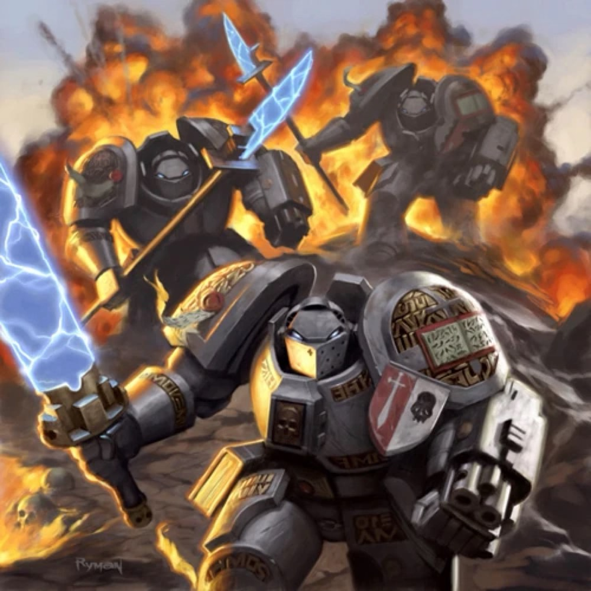

Age of Redemption
| Age of Redemption | |
|---|---|
| Era of the Age of the Imperium | |
 Battle Sisters of the Adepta Sororitas in a crusade of the faithful, the kind of war that defined the age | |
| Date | c. 010.M37 – c. 034.M38 or 112.M38 (accounts differ) |
| Preceded by | Age of Apostasy |
| Followed by | The Waning |
| Ecclesiarchy | Reformed under the rule of Sebastian Thor |
| Major wars | Wrath of the Chaos Sun Abyssal Crusade Occlusiad War Benedictine War Seventh and Eighth Black Crusades |
| Outcome | Faith of the Imperium restored; its armies, fleets and garrisons exhausted by crusade |
The Age of Redemption was an era of Imperial history that followed the Age of Apostasy. It began around 010.M37 and ended early in the 38th millennium. The age was marked by a great surge of religious fervour across the Imperium of Man, expressed in a long series of crusades against the enemies of the Emperor. It ended when those crusades had drawn so many warships, regiments and Chapters away from their duties that thousands of worlds were left undefended, opening the slow decline called the Waning.[1]
Imperial chronicles give no fixed date for the end of the age. The Annals of the Imperium close it around 034.M38. Other histories carry it to 112.M38, the year in which the survivors of the Abyssal Crusade returned from the Eye of Terror. Both dates are approximate.[1][2]
Background
[edit]The Age of Apostasy had ended with the death of the High Lord Goge Vandire and the election of Sebastian Thor as Ecclesiarch. Thor's reforms forbade the Ecclesiarchy to keep men under arms, founded the Adepta Sororitas, and turned the Imperial Cult back toward moral and spiritual ends. The Imperium that emerged was poorer and more fearful, but its faith had been renewed, and the generations that followed set out to atone for the sins of the Reign of Blood.[1]
Character of the age
[edit]The Imperial Cult grew in zeal as never before. Pyres for heretics burned day and night on a thousand worlds as the faithful sought to punish their own sins through the flesh of others. Crusade after crusade was launched by the Adeptus Astartes, the Imperial Navy and the regiments of the Imperial Guard to recover lost worlds and drive back Chaos, the Orks and other aliens.[1]

Over the centuries this fervour reached a pitch of fanaticism. Sector fleets, Space Marine Chapters and Guard regiments were drawn into ever longer campaigns far from the worlds they were meant to protect. Imperial historians count this as the root of the disasters that followed, since the garrisons left behind were too weak to hold when new threats arose.[1]
Major events
[edit]Wrath of the Chaos Sun (010.M37)
[edit]In 010.M37 the red giant at the heart of the Maxil Beta system exploded in an expanding cloud of warp-flame. The people of every world for hundreds of light years were mutated beyond recognition or possessed by creatures of the Warp. The High Lords of Terra ordered every force close at hand to respond. The Grey Knights fought beside a dozen other Chapters, countless Guard regiments and the young Orders Militant of the Adepta Sororitas. The common effort did much to heal the wounds that Vandire's treachery had opened in the Imperium.[1]

The Great Cull (020.M37)
[edit]In 020.M37 the High Lords began a long and lethal purge of the Adeptus Terra and of the governments of many worlds. Its stated purpose was to make sure that no corruption of the faith like the Reign of Blood could ever happen again. It became known as the Great Cull.[1]
The Abyssal Crusade (321.M37)
[edit]Main article: Abyssal Crusade
After the Ecclesiarchal Purges of 321.M37, the preacher Basillius tested every Chapter whose homeworld had been touched by the warp storm Dionys. He found thirty of them wanting. The condemned Chapters, called the Judged, chose to seek redemption by a penitent crusade into the Eye of Terror. They were ambushed as they entered the Eye and scattered across it. Many were destroyed and many fell to Chaos. The survivors returned in 112.M38 and exposed Basillius as a servant of the Dark Gods.[2]
The Occlusiad War (c. 550–560.M37)
[edit]Around the middle of the millennium the north-western fringe of the Segmentum Obscurus was ravaged by the Apostles of the Blind King, a cult of rogue tech-priests who held that humanity was an affront to the Machine God. The Apostles had recovered weapons from the Dark Age of Technology that could turn living stars into supernovae, and with them they wiped human life from the outer segmentum. The constellations of the region were changed for ever.[1][3]
The war lasted about a decade. The newly founded Dark Hunters Chapter held its homeworld against the Blind King's forces at a heavy cost. The end came when the Navigator Joyre Macran found the Blind King's palace-warship hidden in a fold of the Warp, escaped with the knowledge, and guided the battleship Dominus Astra to it. The battleship's lances pierced the palace and killed the Blind King. Without his prescience the Apostles were quickly overcome, and their weapons were locked away in the vaults of Mars. Most chronicles give the war's date as 555.M37; the archives of the Mechanicus record it as running from 550 to 560.M37.[1][3]
The Benedictine War
[edit]The Benedictine War was a War of Faith fought in the Benedictine sub-sector. It was led by the Black Templars together with five Orders Militant of the Adepta Sororitas and many other armies of the faith. Several Aeldari worlds were taken, and two High Marshals of the Black Templars were killed in quick succession. The Ecclesiarch then declared the war over, saying enough had been done in the Emperor's name. The new High Marshal, Constantine, ignored him. The Black Templars fought on alone and purged the remaining worlds of the sub-sector.[1]

The Lost Crusade (754.M37)
[edit]By 754.M37 the menial workers of thousands of worlds had risen against their drudgery. They followed wild-eyed preachers who promised a galaxy of tolerance, and the movement was so popular among the young that it was called the Children's Crusade. Billions of pilgrims took ship for Terra. Some were taken by pirates, but most vanished in the Warp, and the movement became known as the Lost Crusade. In 666.M38, during the Grim Harvest, a fleet of fused and misshapen space hulks drifted out of the Warp near Terra. Some of its vessels could still be identified as pilgrim transports of the Lost Crusade. They were filled with mutants and possessed horrors, and the Inquisition worked to hide the fleet's existence.[1]
The Seventh Black Crusade (811.M37)
[edit]In 811.M37 Abaddon the Despoiler led the Black Legion out of the Eye of Terror past Cadia, and then disappeared. Years of hunting followed across the Segmentum Obscurus, with raids on remote worlds, false sightings and rumour spreading paranoia through the Imperium. This campaign is remembered as the Ghost War. Abaddon outmanoeuvred the commanders of Battlefleet Obscurus again and again. At Midian and at Mackan he inflicted grave losses on the Blood Angels. In the end the Traitors returned to the Eye without having broken the Imperium's defences.[4]
The Heavenfall Massacres (956.M37)
[edit]In 956.M37 the Heavenfall Massacres took place. Imperial records preserve almost nothing else about them.[1]
The Eighth Black Crusade (999.M37)
[edit]At the turn of the millennium Abaddon launched his eighth Black Crusade. Across the Segmentum Obscurus his warbands killed citizens in exact numbers and set their bodies in ritual patterns. On the moons of Teekus eight of twenty crater cities were opened to the void. Aboard the pilgrim ship Divine Path, 999 passengers were murdered in order of the tokens they carried. The killings formed a sum offered to Tzeentch, called the Skullgather. It ended on the forge world of Rithcarn, where the Black Legion raised the mutant workers in revolt and fed the ruling magi into their own machines. The Inquisition broke the code only after the ritual was complete and Abaddon had won the favour he sought.[4]
End of the age
[edit]By the early 38th millennium the Imperium's armed forces were exhausted by centuries of continuous crusade. The return of the Abyssal Crusade in 112.M38 and the destruction of the cult of Basillius showed how far zeal had been turned against the Imperium itself. Star system after star system fell to Ork invasion, Chaos uprising, alien infestation or simple rebellion, and the Imperium entered the Waning. The ninth Black Crusade, which struck the naval fortress of Cancephalus in 537.M38, is counted among the first great disasters of that age.[1]
Legacy
[edit]Historians of the Ministorum remember the Age of Redemption as the time when the Imperium was cleansed of the sins of the Apostasy. Historians of the Administratum tend to see it as the time when that cleansing went too far, and when the strength of the Imperium was spent on crusades far from the worlds that most needed protection. Both views agree that the losses of the age were never fully made good.[1]
Timeline
[edit]Dated events of the age. See also 37th millennium and 38th millennium.
| Date | Event |
|---|---|
| 010.M37 | The Wrath of the Chaos Sun at Maxil Beta. |
| 020.M37 | The Great Cull of the Adeptus Terra. |
| 133.M37 | Sinophia granted to the Rogue Trader Teresa Sinos. |
| 321.M37 | The Abyssal Crusade enters the Eye of Terror. |
| 502.M37 | The Great Expansion of the T'au Empire begins. |
| c. 550–560.M37 | The Occlusiad War (555.M37 in most chronicles). |
| 754.M37 | The Lost Crusade. |
| 811.M37 | The Seventh Black Crusade, the Ghost War. |
| 871.M37 | The Battle of Midpoint. |
| 956.M37 | The Heavenfall Massacres. |
| 999.M37 | The Eighth Black Crusade. |
| c. 034.M38 | End of the age by the reckoning of the Annals of the Imperium. |
| 112.M38 | The Abyssal Crusade returns; the cult of Basillius destroyed. |
| 537.M38 | The Ninth Black Crusade strikes Cancephalus, in The Waning. |
| 666.M38 | The Grim Harvest: the Lost Crusade returns as space hulks. |